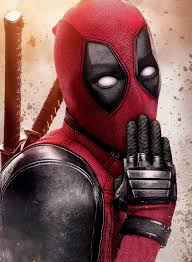
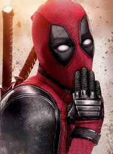

Ici nous allons parler d'acteur connus et de leurs parcours.
Seront présent notamment des acteur qui on joués dans des film marvel comme Chris Evans, Robert Downey Junior... Et d'autre star iconique de la cinématograpgie comme Zendaya Coleman!
Et en Bonus le nom des cérémonie de récompense qui existent en Amérique!!!
Le très célèbre Chris Evans accède à la célébrité a l'aide de son rôle de Setve Roger, alias Captain América. Il a récément fait une aparition dans Deadpool et Wolverine
Attiré par le théâtre dès son plus jeune âge, il prend des cours d'été au Lee Strasberg Theatre and Film Institute de New York avant sa dernière année de secondaire. Après être apparu dans un court métrage pédagogique, Biodiversity: Wild About Life! (1997), il sort diplômé de la Lincoln-Sudbury Regional High School en 1999
En septembre 2000, il part pour Los Angeles et s'installe dans une résidence pour jeunes acteurs à Toluca Lake, Oakwood Apartments
C'est en 2001, qu'il se révèle au grand public, avec le rôle principal de la comédie adolescente Sex Academy. L'acteur profite alors de sa notoriété naissante pour persévérer dans le septième art et diversifier les genres : il accompagne une jeune Scarlett Johansson dans la comédie romantique Les Notes parfaites (2004), donne la réplique à Kim Basinger dans le thriller Cellular, et est révélé au grand public en incarnant la Torche humaine dans la production Les Quatre Fantastiques (2005).

Chris Hemsworth est un acteur australien, il est le cadet de sa fratrie, ses deux frère, Luke et Liam, sont également deux acteur. Il est marié a l'actrice espanol Elsa Pataky, ils se sont rencontré en 2010 et se sont marié la même année. Ils on eu trois enfant: India Rose hemsworth, Sasha hemsworth et Tristan Hemsworth.
L'acteur a joué dans de nombreux film et série, mais la plupart le connaissent sous le nom de Thor, dieu du tonerre et frère de Loki (joué par Tom Hiddleston)
En 2003, âgé de 21 ans, il auditionne pour le rôle de Robbie Hunter dans la série australienne Summer Bay, mais se voit finalement attribuer celui de Kim Hyde. Il déménage alors à Sydney, et récolte rapidement deux nominations aux Logie Awards. Parallèlement, il apparaît dans la 5e saison de Dancing with the Stars (Australie) avec Abbey Ross, mais ils sont le 6e couple éliminé. Le 3 juillet 2007, il quitte la série et s'envole pour les États-Unis.
Il court les castings durant l'année 2007 : ainsi, il figure dans la liste finale pour incarner Gambit dans le blockbuster préquel X-Men Origins : Wolverine, mais c'est finalement Taylor Kitsch qui est choisi. Il est aussi en lice pour incarner le héros de G.I. Joe : Le Réveil du Cobra, mais c'est finalement Channing Tatum qui l'emporte
Dans un premier temps connu aux États-Unis grâce aux rôles qu'il incarne à la télévision comme celui de Bright Abbott dans Everwood et d'Andy Dwyer dans Parks and Recreation, il joue aussi des rôles secondaires au cinéma comme dans Wanted : Choisis ton destin, Le Stratège, Ten Years, Cinq ans de réflexion, Zero Dark Thirty et Her. Il prend par la suite part à plusieurs films comiques tels que Hot Babes et Delivery Man.
Il atteint la célébrité mondiale en 2014 lorsqu'il prête sa voix au personnage d'Emmet Brickowoski dans La Grande Aventure Lego puis en intégrant l'Univers cinématographique Marvel en incarnant Peter Quill alias Star-Lord dans le premier film Les Gardiens de la Galaxie et dans sa suite ainsi que dans la série Avengers. En 2015, il joue le rôle principal d'Owen Grady dans Jurassic World, quatrième volet de la saga Jurassic Park qui devient l'un des plus gros succès au box office de l'histoire du cinéma. En 2016, il joue l'un des rôles principaux dans Les Sept Mercenaires. En 2018, il est à l'affiche de Jurassic World: Fallen Kingdom et, en 2019, il fait une apparition dans Avengers: Endgame, réalisé par Joe et Anthony Russo. En 2014, il est classé deuxième dans la liste « Sexiest Men Alive » du magazine People
Cette jeune actrice Dano-Américaine est révélé au monde alors qu'elle n'a encore que 14 ans, grace a sa presation dans "l'homme qui murmurait a l'oreille des chevaux", après coup, elle enchaine les premier rôle: "Ghost world", "Lost in translation" ou encore "la jeune fille à la perle".
Scarlett est une actrice, mais également, réalisatrice, scénariste, productrice, chanteuse. Elle a produit "Black widow" et "to the moon"
Avec la Veuve Noire, elle finit la décennie avec deux blockbusters très attendus : en avril 2018, Avengers: Infinity War, quatrième plus grand succès commercial de l'histoire du cinéma avec plus de 2 milliards de dollars de recettes (et à ce point le meilleur box-office pour Scarlett Johansson). Sur l'année 2018, Scarlett Johansson domine le classement des actrices les mieux payées au monde, avec un revenu de 40,5 millions de dollars. Par ailleurs, au classement des recettes cumulées par acteurs au box office mondial, elle figure en troisième position derrière Samuel L. Jackson et Robert Downey Jr., ce qui fait d'elle la première actrice, avec des recettes cumulées supérieures à cinq milliards de dollars

Il étudie à la Donhead Preparatory School à Wimbledon puis au Wimbledon College. Il termine ensuite ses études à la BRIT School for Performing Arts and Technology à Selhurst, une banlieue de Londres
Il commence à se passionner pour la danse lors d'un cours de hip-hop à la Nifty Feet Dance School de Wimbledon. Il est alors repéré par Lynne Page, l’associée de Peter Darling, le chorégraphe du film Billy Elliot et de son adaptation en comédie musicale, Billy Elliot, the Musical
Qui a dit que Tom Holland ne pouvait pas tout faire? voici la preuve ... cette vidéo fait partie d'un concour appelé: lyp sinc battle. Le principe est que des célébrités s'affronte sur des song et réalise une performance.
Tom Holland, un jeune acteur de 28 ans, a commencé sa carrière en 2012 à l'age de 16 ans, dans le film "the Impossible" de Juan Antonio Bayona.
L'acteur est notamment connu pour "The impossible", "In the heart of the sea", où il rencontrera Chris Hemsworth, "The lost city of Z", "Cherry", "Uncharted" et bien évidemment, "Spider-man".
Le jeune britannique reprend le rôle de Peter Parker (précédé par Tobey Maguire et Andrew Garfield). Sony signe un contrat de six film avec Marvel, l'acteur apprait donc dans:
Avec ses frères, il crée en 2017 l'association caritative The Brothers Trust dont le but est de récolter de l'argent pour diverses causes.
Le 19 novembre 2021, Tom Holland officialise son couple avec l'actrice Zendaya, avec qui il partage l'affiche de la trilogie Spider-Man.
voici deux photo de Tobey Maguire et Andrew Garfield:
D’abord connu au Royaume-Uni pour son rôle dans la série télévisée Les Enquêtes de l’inspecteur Wallander, où il interprète Magnus Martinsson, il devient une vedette internationale de la pop culture en endossant le rôle de Loki, un super-vilain emblématique de l’univers Marvel, et le frère adoptif de Thor. Il apparaît ainsi dans les quatre films de l'Univers cinématographique Marvel centrés sur le personnage de Thor et sera un antagoniste des Avengers dans les œuvres qui les réunissent. Tom Hiddleston interprète également Loki dans la série télévisée éponyme diffusée depuis le 9 juin 2021 sur Disney+.
En dehors de l'univers cinématographique Marvel, Tom Hiddleston a alterné les apparitions dans des films indépendants, tournant avec de célèbres réalisateurs tels que Woody Allen (Minuit à Paris), Steven Spielberg (Cheval de guerre), Jim Jarmusch (Only Lovers Left Alive) et Guillermo del Toro (Crimson Peak). En 2016, il remporte le Golden Globe du meilleur acteur dans une mini-série ou un téléfilm pour sa performance dans la mini-série The Night Manager, réalisée par Susanne Bier et adaptée du roman de John Le Carré
En 1970, il joue dans un film de son père, alors qu'il n'a encore que cinq ans. Quelque temps après le divorce de ses parents, il retourne vivre avec sa mère à Los Angeles, où il fait des petits boulots (il travaille dans un restaurant ou dans un magasin de chaussures) et joue dans des petites pièces de théâtre après avoir abandonné l'université.
Il est nommé pour l'Oscar du meilleur acteur pour son interprétation de Charlie Chaplin. Il connaitra ensuite, malheureusement, une période vide, du fait qu'il ait de grave problème de drogue et d'alcool qui le conduiront ensuite en Prison...
C'est en 2008 que l'acteur fait son grand retour, dés sa sortie de Prison il décroche le rôle d'Iron Man dans l'univers merveilleur de Marvel. Beaucoup pensait qu'il n'arriverait a rien après ce séjours en prison, il leurs a prouvé le contraire. Cela lui vaut permet d'occuper une place majeure durant plusieur décénie, en 2013, cela lui aura permit de devenir l'un des acteur les mieux payé du monde!
En 2023, il incarne Lewis Strauss dans le biopic Oppenheimer, rôle qui lui vaut le Golden Globes du meilleur acteur dans un second rôle et le Screen Actors Guild Award du meilleur acteur dans un second rôle. Pour ce même rôle, il reçoit le 11 mars 2024 l’Oscar du meilleur acteur dans un second rôle.
Robert Downey Jr est prévu à la tête de l'affiche du film Avenger Doomsday, prévu pour Avril 2026
L'actrice que nous connaisson sous le nom de la sorcière rouge est révélée au monde en 2011 alors qu'elle a 22 ans dans le thriller dramatique "Martha Marcy May Marlen",
En 2009, Elizabeth a intégré le théâtre d'art de Moscou, le temps d'un semestre. La jeune femme parcour déja l'univers du cinéma, alors qu'elle n'a que cinq ans elle fait une courte apparition dans le film "Deux jumelle dans l'ouest". L'actrice partage l'affiche de "very good girl" avec Dakota Fanning. Elle est également a l'affiche du remake "Godzilla"
En parallèle se conclut la post-production du blockbuster Avengers : Infinity War, attendu pour avril 2018. En avril 2019, elle revient dans Avengers: Endgame qui est un succès mondial dès sa sortie. En 11 jours, ce blockbuster décroche la seconde place au box-office se plaçant devant Titanic (film, 1997) de James Cameron . Il prend après seulement douze semaines d'exploitation la première place de celui-ci, detrônant Avatar également de Cameron.
En septembre 2018, elle incarne l'héroïne d'une série télévisée diffusée sur Facebook Watch, "Sorry for Your Loss". Les quatre premiers des dix épisodes produits pour la première saison ont été présentés en juin au Festival International du Film de Toronto 2018. Mais début 2019, elle est officialisée dans une nouvelle série Disney/Marvel, intitulée WandaVision, où elle reprend son rôle de Wanda Maximoff aux côtés de Paul Bettany, l'interprète du synthézoïde Vision. Cette série est diffusée sur Disney+ à partir de janvier 2021. Elle revient encore une fois en force avec le film Doctor Strange in the Multiverse of Madness.
Ryan et Hugh sont de grand amis, c'était une grande joie pour eux deux d'avoir l'opportunité de jouer leurs rôle iconique dans un même film, je vous présente "Deadpool & Wolverine"!

Hugh Jackman que vous avez probablement vue dans les film X-men ou dans The greatest showman est un acteur australo-britannique, et Ryan Reynolds, que vous avez du voir dans les deadpool précédent ou encore dans "Red Notice" avec Dwayne Jhonson.
voici ici la preuve de leurs éternelle complicité
"Deadpool & Wolverine" est un film Marvel, dans la continuité des film "deadpool" qui l'on précédé. Une bonne dose d'humour, d'amitié, (de sang), de bagarre et de langage grossier, et vous avez votre film préféré!
Zendaya Coleman, couramment apellé Zendaya, est une actrice, productrice, mannequin, danseuse. Elle est connu pour être a l'affiche de nombreux film notamment: "Dune", "malcom & Marie", "Challenger" ou encore "Spider-Man" où elle partage l'affiche avec celui qui est aujourd'hui son partenaire, Tom Holland!
Zendaya a commencé par du théatre, sa mère étant elle-même responsable/ Directrice d'un théatre. Elle a notamment jouée plusieur pièce de Shakespeare, la jeune actrice fait sa première apparition le 14 septembre 2009 grâce à une publicité de jouet iCarly, dans laquelle elle tient la vedette avec Stefanie Scott.
La jeune afro-américaine a également jouée dans "the greatest showman" une comédie musicale remarquable ou elle mettra en oeuvre ses talent d'actrice mais pas seulement! Elle montrera également ses talent de danseuse et de chanteuse! Dans cette comédie musicale elle chante plusieur chanson dont une plus connu pour être un duo avec celui que l'on nomme Zac Effron, "Rewrite the star". Elle aura néamoins participé à d'autre "this is me", "Come alive", "the greatest show"!
La jeune femme à d'hors et déjà une carrière resplendissante qui ne cessera de grandir!
Du coté de sa vie privé, elle partage donc sa vie avec l'acteur Britannique de spider-man, Tom Holland. Vous souvenez vous de la vidéo "lyp sinc battle" de Tom? Et bien Zendaya y a également participé! Vous pouvez voir sa performance en cliquant ici !
Le point commun de toute ces star de l'univers Marvel est qu'ils se sont tous vu attribué un film ou une série (excepté Zendaya dans le rôle de Michelle Jones dans spider-man "homecoming", "far from home" et "no way home". Elle nous offre cependant une représentation stupéfiante dans Dune!)! De captain América à Wanda Maximoff en passant par Natacha Romanoff, ils on tous un film ou une série qui parle d'eux.
Je n'ai pas besoin de parlé d'Iron-Man ou de Captain américa, mais sachez que nous pouvons retracez le passé de Natacha Romanoff en regardant le film "Black widow" désormais disponible sur Dysney+! Il est de même pour Wandavision et Loki!
Voici quelque image de chaque acteur dans leur tenue la plus connu:

 


de gauche à droite: Captain América-Steve Roger, Thor-dieu du tonerre, Natacha Romanoff-The black widow, Peter Parker/Spider-man, Loki-dieu de la malice, Tony Stark/Iron-Man, Wanda Maximoff, Logan-Wolverine, wade wilson-Deadpool, MJ (Michelle) Jones
Voici quelque titre de film et leurs date de sortie annoncé par marvel:
Oscars du cinéma ou Academy Awards (créés en 1929)
Emmy Awards (créés en 1949)
Golden Globes Awards (créés en 1944)
Screen Actors Guild Awards (créés en 1995)
Grammy Awards (créés en 1958)
MTV Video Music Awards (créés en 1984)
American Music Awards (créés en 1971)
Billboard Music Awards (créés en 1990)
Ce qu'il est important de retenir est que chacun de ses acteur n'a commencé a partir de rien, et aujourd'hui ils on tous reçu plusieur récompense, plusieur rôle a l'affiche et que le monde se souviendra d'eux pendant plusieur décénnie et le cinéma ne les oubliera jammais vraimment!
Le mots clé pour réussir est de perséverer. C'est ce que tous ces acteur on fait et aujourd'hui ils sont entré dans les légende de la cinématographie!